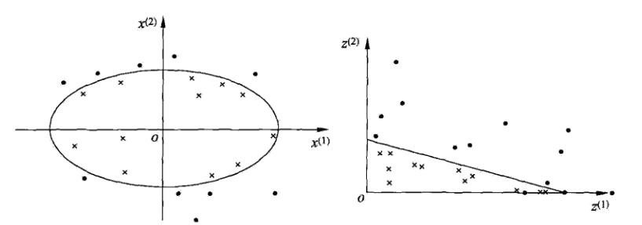
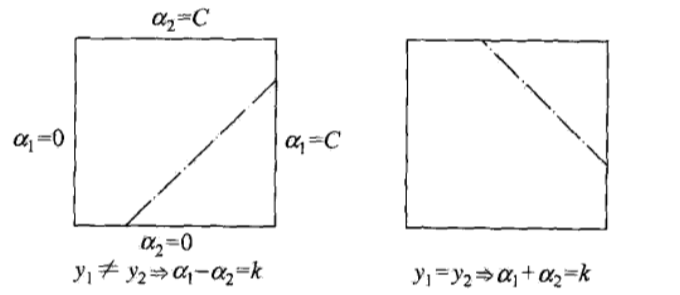

8.3 非线性支持向量机与核函数
非线性数据集则使用非线性支持向量机，其主要特点是利用核技巧(kernel trick)。为此，先要介绍核技巧。
8.3.1 核技巧
非线性分类问题
非线性分类问题是指通过利用非线性模型才能很好地进行分类的问题。
如下图所示：

一般来说，对给定的一个训练数据集，其中，实例属于输入空间，，对应的标记有两类，i=1,2,…,N。如果能用中的一个超曲面将正负例正确分开，则称这个问题为非线性可分问题。
非线性问题的解决思路:对非线性数据集进行非线性变换，将非线性问题变换为线性问题，通过解变换后的线性问题的方法求解原来的非线性问题。
对图8.7所示的例子，通过变换，将左图中的椭圆变换成右图中的直线，将非线性分类问题变换为线性分类问题：
设原空间为，新空间为，定义从原空间到新空间的变换(映射):
经过变换，原空间变换为新空间，原空间中的点相应地变换为新空间中的点，原空间中的椭圆:
变换成为新空间中的直线:
在变换后的新空间里，直线可以将变换后的正负实例点正确分开。
这样，原空间的非线性可分问题就变成了新空间的线性可分问题。
核函数的定义
定义8.6(核函数) 设是输入空间(欧式空间的子集或离散集合)，又设为特征空间(希尔伯特空间)，如果存在一个从到的映射:
使得对所有，函数满足条件:
则称为核函数，为映射函数。
核技巧的思路:在学习与预测中只定义核函数，而不显式地定义映射函数。通常，直接计算比较容易，而通过和计算并不容易。
核技巧在支持向量机中的应用
在线性支持向量机的对偶问题的目标函数(8.37)中的内积可以用核函数来代替。此时对偶问题的目标函数为：
同样，分类决策函数中的内积也可以用核函数代替，而分类决策函数式(8.56)变成:
等价于经过映射函数将原来的输入空间变换到一个新的特征空间，将输入空间中的内积变换为特征空间中的内积。
在新的特征空间中学习线性支持向量机，当映射函数是非线性函数时，学习到的含有核函数的支持向量机是非线性分类模型。
8.3.2 正定核
函数满足什么条件才能成为核函数？(通常所说的核函数就是正定核函数)。
假设是定义在上的对称函数，并且对任意的，关于的Gram矩阵是半正定的。可以依据函数，构成一个希尔伯特空间，其步骤是:
- 首先定义映射并构成向量空间S；
- 然后在S上定义内积构成内积空间
- 最后将S完备化构成希尔伯特空间
证明如下所示:
1.定义映射，构成向量空间S
先定义映射
根据这一映射，对任意，，i=1,2,…,m，定义线性组合
考虑由线性组合为元素的集合。由于集合对加法和数乘运算是封闭的，所以构成一个向量空间。
2.在上定义内积，使其成为内积空间
在上定义一个运算*:对任意，
定义运算*
证明运算*是空间的内积。为此要证:
其中，(8.74)~(8.76)由式(8.70)~式(8.72)及的对称性容易得到。
现证式(8.77)。由式(8.70)及式(8.73)可得:
由Gram矩阵的半正定性知上式右端非负，即。
再证式(8.78)。充分性显然。为证必要性，首先证明不等式:
设，则，于是，
其左端是的二次三项式，非负，其判别式小于等于0，即
于是式(8.79)得证。现证若，则。事实上，若
则按运算*的定义式(8.73)，对任意的，有
于是，
由式(8.79)和式(8.77)有:
由式(8.80)有
此式表明，当时，对任意的x都有。
至此，证明了为向量空间的内积。赋予内积的向量空间为内积空间。*因此是一个内积空间。
既然*为的内积运算，那么仍然用表示，即若:
则，
3.将内积空间完备化为希尔伯特空间
由式(8.81)定义的内积可以得到范数:
因此，是一个赋范向量空间。根据泛函分析理论，对于不完备的赋范向量空间，一定可以使之完备化，得到完备的赋范向量空间。
一个内积空间，当作为一个赋范向量空间是完备的时候，就是希尔伯特空间。
核函数K具有再生性，即满足:
及
称为再生核。
4.正定核的充要条件
定理8.5(正定核的充要条件) 设是对称函数，则为正定核函数的充要条件是对任意，i=1,2,…,m, 对应的Gram矩阵：
是半正定矩阵。
证明:
必要性。由于是上的正定核，所以存在从到希尔伯特空间的映射，使得:
于是，对任意，构造关于的Gram矩阵:
对任意，有
表明关于的Gram矩阵是半正定的。
充分性。已知对称函数对任意，关于的Gram矩阵是半正定的(即)。根据前面的结果，对给定的，可以构造从到某个希尔伯特空间的映射:
由式(8.83)可知，
并且
由式(8.86)即得
表明是上的核函数。
定义8.7（正定核的等价定义） 设，是定义在上的对称函数，如果对任意，i=1,2,…,m，对应的Gram矩阵
是半正定矩阵，则称是正定核。
正定核的检验比较难，因为要求对任意，i=1,2,…,m，验证K对应的Gram矩阵是否为半正定的。
所以往往使用已有的核函数。另外，由Mercer定义可以得到Mercer核，正定核比Mercer核更具一般性。
8.3.3 常用核函数
1.多项式核函数
对应的支持向量机是一个p次多项式分类器。在此情形下，分类决策函数成为
2.高斯核函数
对应的支持向量机是高斯径向基函数分类器。在此情形下，分类决策函数成为:
3.字符串核函数
核函数不仅仅可以定义在欧式空间上，还可以定义在离散数据的集合上。比如，字符串核是定义在字符串集合上的核函数。字符串核函数在文本分类、信息检索、生物信息学等方面都有应用。
字符串核函数给出了字符串s和t中长度等于n的所有子串组成的特征向量的余弦相似度。直观上，两个字符串相同的子串越多，它们就越相似，字符串核函数的值就越大。字符串核函数可以由动态规划快速地计算。
8.3.4 非线性支持向量分类机
如上所述，利用核技巧，可以将线性分类的学习方法应用到非线性分类问题中去。将线性支持向量机扩展到非线性支持向量机，只需将线性支持向量机对偶形式中的内积换成核函数。
定义8.8(非线性支持向量机) 从非线性分类训练集，通过核函数与软间隔最大化，或凸二次规划(8.95~8.97)，学习得到的分类决策函数。
称为非线性支持向量，是正定核函数。
算法8.4（非线性支持向量机学习算法）
输入:训练数据集，其中，，i=1,2,…,N;
输出:分类决策函数
(1)选取适当的核函数和适当的参数C，构造并求解最优化问题:
求得最优解。
(2)选择的一个正分量，计算
(3)构造决策函数:
当是正定核函数时，问题(8.95)~(8.97)是凸二次规划问题，解是存在的。
8.4 序列最小最优化算法
SMO(sequential minimal optimization)算法要解如下凸二次规划的对偶问题:
在这个问题中，变量是拉格朗日乘子，一个变量对应于一个样本点；变量的总数等于训练样本容量N。
SMO算法包括两个部分：求解两个变量二次规划的解析方法和选择变量的启发式方法。
8.4.1两个变量二次规划的求解方法
不失一般性，假设选择的两个变量是，，其他变量是固定的。于是SMO的最优化问题(8.98)~(8.100)的子问题可以写成:
其中，，i,j=1,2,…,N，是常数，目标函数式(8.101)中省略了不含，的常数项。
为了求解两个变量的二次规划问题(8.101)~(8.103)：
- 首先分析约束条件
- 然后在此约束条件下求极小。
8.4.2 分析约束条件
由于只有两个变量，约束可以用二维空间中的图形表示，如下图所示:

不等式约束(8.103)使得在盒子内，等式约束(8.102)使在平行于盒子的对角线的直线上。因此要求的是目标函数在一条平行于对角线的线段上的最优值。
假设问题(8.101)~(8.103)的初始可行解为，，最优解为，，并且假设在沿着约束方向未经剪辑时的最优解为。
由于满足不等式约束条件(8.103)，所以最优值的取值范围必须满足条件:
其中，L与H是所在的对角线段端点的界。
如果，则
L式子max函数的第二项，对应于，，而
H式子max函数的第二项，对应于，同理可得以上表达式。
如果，则
首先，求沿着约束方向未经剪辑即未考虑不等式约束(8.103)时的最优解；
然后，再求剪辑后的解。我们用定理来叙述这个结果，为了叙述简单，记:
令
当i=1,2时，为函数g(x)对输入的预测值与真实输出之差。
定理8.6 最优化问题(8.101)~(8.103)沿着约束方向未经剪辑时的解是:
其中，
关于是输入空间到特征空间的映射，，i=1,2，由式(8.105)给出。
经剪辑后的解是
由求得是
证明:
引进记号：
目标函数可写成
由及，可将表示为：
代入式(8.110)，得到只是的函数的目标函数:
对求导数
令其为0，得到
将代入，得到:
将代入，于是得到：
要使其满足不等式约束必须将其限制在区间[L,H]内，从而得到的表达式(8.108)。由等式约束(8.102)得到的表达式(8.109)。于是得到最优化问题(8.101)~(8.103)的解(，)。
8.4.3 变量的选择方法
SMO算法在每个子问题中选择两个变量优化，其中至少一个变量是违反KKT条件的。
1.第 1个变量的选择
SMO称选择第1个变量的过程为外层循环。外层循环在训练样本中选取违反KKT条件最严重的样本点，并将其对应的变量作为第1个变量。具体地，检验训练样本点是否满足KKT条件，即
其中，。
该检验是在指定阈值范围内进行的。在检验过程中，外层循环首先遍历所有满足条件的样本点，即在间隔边界上的支持向量点，检验它们是否满足KKT条件。如果这些样本点都满足KKT条件，那么遍历整个训练集，检验它们是否满足KKT条件。
2.第2个变量的选择
SMO称选择第2个变量的过程为内层循环。假设在外层循环中已经找到第1个变量，现在要在内层循环中找第2个变量。第2个变量选择的标准是希望能使有足够大的变化。
由式(8.106)和式(8.108)可知，是依赖于的。一种简单做法是选择，使其对应的最大。(因为已定，也确定了。如果是正的，那么选择最小的作为;如果是负的，那么选择最大的作为)。为节省时间，把所有保存到一个列表中。
在特殊情况下，如果内层循环通过以上方法选择的不能使目标函数有足够的下降，那么采用以下启发式规则继续选择。
启发式规则如下所示：
- 遍历在间隔边界上的支持向量点，依次将其对应的变量作为使用，直到目标函数有足够的下降(使用指定阈值来标识)。
- 若找不到合适的，那么遍历训练数据集
- 若仍找不到合适的，则放弃第1个，再通过外层循环寻求另外的。
3.计算阈值b和差值
在每次完成两个变量的优化后，都要重新计算阈值b。当时，由KKT条件(8.112)可知：
于是，
由的定义式(8.105)有
式(8.114)的前两项可写成：
代入式(8.114)，可得：
同样，如果，那么，
如果，同时满足条件，i=1,2，那么。
如果，是0或者C，那么和以及它们之间的数都是符合KKT条件的阈值，这时选择他们的中点作为。
在每次完成两个变量的优化之后，还必须更新对应的值，并将它们保存在列表中。
Ei^{new} = \sum{S} y_j \alpha_j K(x_i,x_j)+b^{new} - y_i \ (8.117)
取初值，令k=0
选取优化变量，，解析求解两个变量的最优化问题(8.101)~(8.103)，求得最优解，，更新为；
若在精度范围内满足停机条件
其中，
则转步骤4；否则令k=k+1,转步骤2
取。